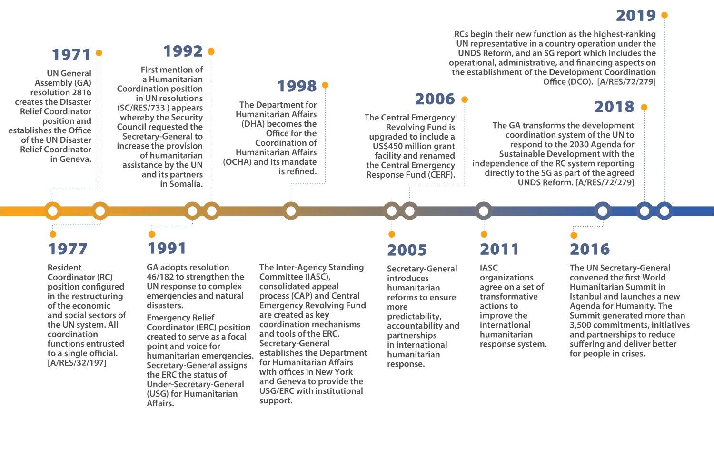

Two displaced women. 2019, Awaradi displacement site, Niger. Photo: OCHA/Eve Sabbagh
1. INTRODUCTION TO UN LEADERSHIP
IN HUMANITARIAN SETTINGS
Background
Climatic shocks, the impact of emerging or protracted conflicts and the spread of infectious diseases are driving humanitarian needs to unprecedented levels. Strong leadership by Resident Coordinators (RCs) is instrumental in addressing the growing needs of crisis-affected people, and over the years it has been critical for furthering the effectiveness of humanitarian operations. Significant improvements have been made in planning, forecasting and analysis; in the ability to prioritize; and in coordination. Humanitarian partners can now better identify the people most in need and at risk and deliver priority assistance faster.
An RC – whether designated as a Humanitarian Coordinator (HC) or not – is ultimately responsible for ensuring organizations work together to prepare for emergencies and to support the host Government in responding to crises or emerging humanitarian situations.
Mandate for humanitarian leadership
One of the purposes of the UN, as stated in its Charter, is “to achieve international co-operation in solving international problems of an economic, social, cultural, or humanitarian character”. The UN first did this in the aftermath of the Second World War when it helped to rebuild Europe. The organization is now relied upon to coordinate international humanitarian relief operations due to natural and human-made disasters in areas beyond the response capacity of national authorities alone.
UN General Assembly resolution 46/182 (see section A.2) sets out the basis of the leadership role of the UN Secretary-General in ensuring “preparation for, as well as rapid and coherent response to, natural disasters and other emergencies”. To this end, the General Assembly resolution established the position of the Emergency Relief Coordinator (ERC) to work closely with the UN Secretary-General, in cooperation with the relevant organizations and entities dealing with humanitarian assistance. The United Nations Office for the Coordination of Humanitarian Affairs (OCHA) was established as part of the UN Secretariat to support the ERC in this role.
Recognizing the positive role that sustainable development can play in mitigating drivers of conflicts, disaster risks, humanitarian crises and complex emergencies, the General Assembly also reiterated in resolution 71/243 that a comprehensive whole-of-system response, including greater cooperation and complementarity among development, disaster risk reduction, humanitarian action and sustaining peace, is fundamental to efficiently and effectively addressing needs and attaining the Sustainable Development Goals (SDGs).
As representative of the UN Secretary-General, the RC plays a critical role at the country level: facilitating inter-agency preparedness efforts, coordinating humanitarian response,1 and promoting links between humanitarian and development planning and programming. The ERC and OCHA support RCs in this role.
1 In refugee situations, UNHCR is mandated to lead the refugee response. See Chapter B.4 (The HPC in refugee situations) for more details on this.
Primary Humanitarian Leadership Responsibilities of the Resident and Humanitarian Coordinator
Detailed humanitarian responsibilities of the RC as leader of the UN country team (with system-wide accountability on the ground) are included in the RC Job Description adopted on 1 January 2019. This is when the reinvigorated RC system came into effect as part of the UN development system reform:2
2 As a result of the reform, the RC now reports directly to the UN Secretary-General.
“In contexts where international humanitarian assistance is required, and a separate Humanitarian Coordinator is not designated and when there is no lead agency, [the Resident Coordinator] leads and coordinates the response efforts of United Nations and relevant humanitarian actors, in accordance with General Assembly resolution 46/182 and related resolutions, facilitating linkages between humanitarian and development programming for enhanced and sustainable impact.”
Where required, the ERC may choose to designate an HC to represent her/him. As outlined in the Terms of Reference for HCs:
“While the affected State has the primary role in the initiation, organization, coordination, and implementation of humanitarian assistance within its territory, in situations where a Humanitarian Coordinator (HC) is designated s/he is responsible for leading and coordinating humanitarian action of relevant organizations in country with a view to ensuring that it is principled, timely, effective and efficient, and contributes to longer-term recovery. The overall objective is to alleviate human suffering and protect the lives, the livelihoods and dignity of populations in need.”
Coordination
In an emergency, there may be several hundred organizations responding in the same location at the same time. Some will be well established before the crisis, while others may arrive after its onset. The role of humanitarian leadership entails improving strategic coordination among relevant organizations involved in humanitarian action and actively facilitating cooperation among them, recognizing that coordination is a collective endeavour. This role must be carried out in full respect of the mandates and authority of all relevant organizations and, importantly, of the host Government.
Where multiple organizations are involved in humanitarian response, coordination is critical. The RC supports the State to help ensure that humanitarian actors responding to a crisis work together to achieve shared strategic objectives and deliver assistance in a principled, effective and complementary manner. The various categories of humanitarian actors include crisis-affected people themselves; civil-society organizations such as community-based and voluntary organizations, faith-based organizations and local/national and international NGOs; the national and foreign private sector; national and foreign militaries; the Red Cross/Red Crescent Movement (International Federation of the Red Cross, International Committee of the Red Cross, National Societies); UN entities; humanitarian and development donors; in-country diplomatic corps; international and regional organizations (including financial institutions); and intergovernmental forums.
Especially in conflict situations in which the State is a party to the conflict, humanitarian action will typically – in line with the principles of neutrality and independence – need to be carried out with limited or no Government involvement. This helps build trust and acceptance among the parties, communities and beneficiaries, which are critical for enabling humanitarian access.
Kevin Kennedy – Coordination
Protection
Humanitarian leadership is guided by and has a key role in promoting respect for international humanitarian law (IHL), international human rights law (IHRL), international refugee law (IRL), and the humanitarian principles of humanity, neutrality, impartiality and independence. Humanitarian action is premised on the fact that, along with having their basic needs met, affected people often also need protection from violence, abuse, coercion and deprivation. Protection is enshrined in the principle of humanity and a prime objective of humanitarian action. It is defined by the IASC Principals as the protection of the rights of individuals under IHL, IHRL and IRL, and underpins all aspects of humanitarian preparedness and response. Leadership is critical for ensuring that the common goal of securing better protection outcomes for crisis-affected people remains central to humanitarian decision-making and response strategies.
Adam Abdelmoula – Protection
Duty of Care
As well as delivering on programmatic mandates, it is important to ensure that humanitarian actors remain physically and psychologically safe. There needs to be an appropriate balance between carrying out essential work in high-risk environments, while at the same time preserving the safety and security of personnel. The UN’s High-Level Committee on Management defines Duty of Care as “a non-waivable duty on the part of the Organization to mitigate or otherwise address foreseeable risks that may harm or injure its personnel and their eligible family members”.
The RC plays an important role in ensuring a coherent approach at the country level regarding Duty of Care for UN and humanitarian personnel. Duty of Care risks primarily comprise occupational security risks (e.g. due to an armed conflict), health risks including risks to mental health (e.g. due to exposure to contagious diseases, prolonged exposure to high stress situations, instances of violence, harassment or discrimination) and safety risks (e.g. working in substandard facilities).
Anders Pederson – Duty of Care
Towards the 2030 Agenda
Along with the rise in global humanitarian needs over the last few decades, the volume, cost and duration of humanitarian operations have grown dramatically, not least due to the increasingly protracted nature of crises and the failure to prevent risks from turning into disasters.
The 2030 Agenda and the SDGs, adopted in 2015, set out a new ambition: to not just meet needs, but to reduce risk, vulnerability and overall levels of need. They provide a common framework for humanitarian and development actors based on a vision of a future in which no one is left behind.
Against this backdrop, the UN Secretary-General, eight UN Principals, the World Bank and IOM endorsed a Commitment to Action during the 2016 World Humanitarian Summit. In it, they agreed to seek to meet people’s immediate humanitarian needs while at the same time reducing risk and vulnerability. This entails working towards collective outcomes, across silos, over multiple years, based on the comparative advantage of a diverse range of actors inside and outside the UN system. As many protracted crises are caused and sustained by conflict and violence, it is important to also include peace actors where possible.
Much progress has been made in recent years in terms of policy and guidance to ensure connectivity between humanitarian, development and other frameworks – notably the revised UN Sustainable Development Cooperation Framework (see section C.2 for details on this).
In acute conflict situations, the scope for collaboration might be limited by the need to abide by the principles of neutrality, independence and impartiality to safeguard access to people in need. Whatever the context, collaboration must take place in a manner that neither undermines adherence to humanitarian principles nor exposes affected populations or humanitarian workers to greater risks Humanitarian, development and peace actors should develop the right level of collaboration for the context.
2. NORMATIVE FRAMEWORK FOR
HUMANITARIAN ACTION AND LEADERSHIP
The normative framework comprises UN resolutions and policies, international laws and treaties (including humanitarian law), and accepted principles and standards. It sets out the structure and role of humanitarian leadership, and guides in-country interactions during crises, providing support and a mandate for a principled humanitarian response.
United Nations General Assembly resolution 46/182
United Nations General Assembly resolution 46/182 (adopted in 1991) sets out the framework for the coordination and delivery of UN-led international humanitarian assistance under the leadership of the UN Secretary-General, which continues to guide the work of the humanitarian system today. It established the ERC position; the UN Department of Humanitarian Affairs, which in 1998 became OCHA; the Inter-Agency Standing Committee (IASC); the Central Emergency Revolving Fund, which in 2005 became the Central Emergency Response Fund (CERF); and the Consolidated Appeals Process, which in 2013 was replaced by the Humanitarian Programme Cycle.
>
See section A.3 for more details on the Humanitarian Architecture.
These mechanisms have all been subsequently refined and expanded, and they continue to form key cornerstones of the current humanitarian system.
Resolution 46/182 also set out the guiding principles for humanitarian assistance, including that humanitarian action must be provided in accordance with humanitarian principles (see below). These guiding principles address the relationship and interaction between State sovereignty and principled humanitarian action, including the primary responsibility of each State to assist and protect people affected by humanitarian emergencies on its territory and, when called upon, to facilitate humanitarian organizations in providing humanitarian assistance for which access to affected people is essential.
Since the adoption of resolution 46/182, subsequent humanitarian resolutions of the General Assembly, the Economic and Social Council, and the Security Council have continued strengthening the international normative framework, providing guidance and mandates on humanitarian action and coordination for addressing challenges that have emerged from increasing humanitarian needs and the changing operating environment. These themes include, among others, humanitarian access, the protection of civilians, internal displacement, accountability to affected people, humanitarian civil-military coordination, and the safety and security of humanitarian personnel.
In regards to refugees and migrants, the Compact on Refugees and the Compact for Safe, Orderly and Regular Migration, adopted by the General Assembly in 2018, set out the international framework for international support for managing refugee movements and large-scale migration flows (see section B.1 (Refugee Response Coordination) for details on this).
All decisions taken in the General Assembly and the Economic and Social Council are equally binding on both the United Nations Secretariat and the UN funds and programmes that are accountable to these principal organs. These resolutions are not legally binding on Member States, but it has been common practice for them to adopt resolutions on humanitarian issues by consensus, giving them more prominence and weight.
RCs can refer to the General Assembly’s and the Economic and Social Council’s humanitarian resolutions and key policy decisions for in-country interactions, to help Governments, humanitarian organizations and other relevant parties strengthen their understanding of and support for a more principled, accountable and effective humanitarian response. In some operating contexts, humanitarian resolutions are essential in providing the normative basis, political support and legislative mandate for certain humanitarian activities, as well as legitimizing and facilitating the roles and responsibilities of the RC and international humanitarian organizations.
A Brief History
Key Milestones in strengthening the coordination of UN-led humanitarian assistance
Humanitarian Principles
Humanitarian Principles
As established in resolution 46/182 and reaffirmed in subsequent humanitarian resolutions, humanitarian action must be provided in accordance with the humanitarian principles of humanity, neutrality, impartiality and independence (the latter added in General Assembly resolution 58/114 in 2003), which are central to establishing and maintaining access to affected people.
To reinforce the principle of independence, RCs can rely on Article 100, Chapter XV of the UN Charter3 to remind UN personnel that they “shall not seek or receive instructions from any government or from any other authority external to the Organization” and that Member States should not “seek to influence them in the discharge of their responsibilities”.
3
www.un.org/en/sections/un-charter/chapter-xv/index.html
In addition, IHL entitles impartial humanitarian organizations to offer their services to the parties to an armed conflict for the benefit of people who are not fighting. (Such offers are not considered interference in domestic affairs and do not affect the legal status of armed groups.) Once consent to humanitarian services is obtained from the territorial State, IHL also requires that all parties to the conflict allow and facilitate rapid and unimpeded passage of humanitarian relief for civilians in need, which is impartial in character and conducted without adverse distinction.4
4
https://ihl-databases.icrc.org/customary-ihl/eng/docs/v1_rul_rule55
International Law
Three main bodies of international law guide humanitarian action: IHRL, IHL and IRL, as reflected in treaty and customary law. These are complemented by regional treaties such as the African Union Convention for the Protection and Assistance of Internally Displaced Persons in Africa (Kampala Convention). Other documents, such as the Guiding Principles on Internal Displacement (1998), provide useful restatement and summary of the various legal obligations and have been incorporated into the domestic legislation of some States.
When referring to international law, it is important to note that not all States are party to the relevant treaties of IHRL, IHL and IRL.5 However, some fundamental rules are considered customary and are thus binding independently of treaty participation.
5 The following indicate who is party to what: for IHRL see https://indicators.ohchr.org/; for IHL see https://ihl-databases.icrc.org/applic.xsp; for the Refugee Convention and Protocol see www.unhcr.org/en-us/protection/basic/3b73b0d63/states-parties-1951-convention-its-1967-protocol.html
International human rights law
IHRL applies in times of peace and in situations of violence including armed conflict, as human rights are fundamental to every human being. IHRL lays down obligations that States are bound to respect. A State may restrict or suspend a limited set of rights during a serious public emergency (referred to as ‘derogation’), but certain human rights – such as the prohibition of torture and fair trial rights – are non-derogable, meaning they cannot be limited or suspended in any way, at any time, for any reason, even during an armed conflict. In addition, de facto authorities or non-State armed groups that exercise Government-like functions and control over territory are increasingly expected to respect international human rights norms and standards when their conduct affects the human rights of individuals under their control.6
6 For more substantive guidance see UNSDG Guidance Note on Human Rights for Resident Coordinators and UN Country Teams - https://unsdg.un.org/resources/unsdg-guidance-note-human-rights-resident-coordinators-and-un-country-teams
At the core of IHRL is the International Bill of Human Rights, which consists of three elements: the Universal Declaration of Human Rights, the International Covenant on Civil and Political Rights (ICCPR) with its two Optional Protocols, and the International Covenant on Economic, Social and Cultural Rights (ICESCR) with its Optional Protocol. Under the ICESCR, each State party to the Covenant recognizes the right to an adequate standard of living, including adequate food, clothing and housing, and has committed to take steps to ensure minimum essential levels of these rights to the maximum of its available resources, including those available from the international community through international cooperation and assistance. This includes ensuring that populations are not deprived of essential foodstuffs, essential primary health care, or basic shelter and housing. The right to life and the prohibition of inhuman treatment under the ICCPR have also been interpreted as including a requirement to accept offers of external humanitarian assistance. In resolutions 43/131 (1988) and 45/100 (1990), the General Assembly affirmed that “the abandonment of the victims of natural disasters and similar emergency situations without humanitarian assistance constitutes a threat to human life and an offence to human dignity”. The Convention against Torture, the Convention on the Rights of the Child and its Optional Protocol to the Convention on the Rights of the Child on the involvement of children in armed conflict are also widely ratified and can be particularly relevant in humanitarian crises.
International humanitarian law
IHL aims to limit the effects of armed conflict by protecting people who are not or no longer fighting (civilians, wounded and sick fighters, prisoners of war).7 IHL strikes a balance between competing considerations of humanity and military necessity.
7 For an overview, see: www.icrc.org/en/doc/assets/files/other/what_is_ihl.pdf
When carrying out humanitarian operations in situations of violence, it is important to determine whether the violence amounts to an armed conflict in order to know whether IHL applies. An international armed conflict exists when two or more States resort to armed force against each other, even if one of the parties denies the existence of a state of war. A non-international armed conflict exists when one or more non-State armed groups are fighting, either between themselves or against State armed forces, and the following two cumulative criteria are met: (1) the non-State armed group must possess organized armed forces that are under a certain command structure and have the capacity to sustain military operations, and (2) the hostilities must meet a minimum threshold of intensity. In a non-international armed conflict, IHL binds both the State and non-State parties to the conflict. Determining the existence of an armed conflict requires a thorough assessment of the facts on the ground and some legal expertise. Moreover, the decision to communicate publicly about the existence of an armed conflict and its implications under IHL may entail political considerations and some coordination with other parts of the UN.
The principal rules of IHL are found in the four Geneva Conventions of 1949 (applicable in international armed conflict except for common article 3), Additional Protocol I of 1977 (applicable in international armed conflict) and Additional Protocol II of 1977 (applicable in non-international armed conflict). As stated above, it is important to note that not all States are party to all treaties. Many of the fundamental rules in these treaties (e.g. on humane treatment, fair trial rights, offers of humanitarian services, the protection of civilians in the conduct of hostilities) are considered part of customary international law8 and applicable in both types of armed conflict. However, some differences remain between the rules applicable in international and non-international armed conflict.
8 All States are party to the four Geneva Conventions. Customary international law consists of rules that come from “a general practice accepted as law” and exists independent of treaty law. For more details see: www.icrc.org/en/war-and-law/treaties-customary-law/customary-law
IHL contains specific rules that govern the parties’ conduct of hostilities with a view to sparing civilians and civilian objects, such as the rules of distinction, proportionality and precautions in and against the effects of attack. Medical personnel, transport and facilities are afforded special protection requiring certain precautions before they might be lawfully harmed in an attack. IHL also allows offers of impartial humanitarian services for people who are not or no longer fighting, regulates the passage of humanitarian relief, and requires the freedom of movement of humanitarian personnel, and the protection of humanitarian personnel and assets against attack, harassment, misappropriation, looting and other forms of interference.9
9 See OCHA fact sheet, www.unocha.org/sites/unocha/files/Fact-Sheet_Humanitarian_Relief_Operations%20-%20January%202019.pdf and Oxford Guidance on the Law relating to Humanitarian Relief Operations in Situations of Armed Conflict, www.unocha.org/sites/unocha/files/dms.pdf
Kevin Kennedy – International humanitarian law (IHL)/ Human Rights
INTERNAL DISPLACEMENT
The Guiding Principles on Internal Displacement (1998) set out various legal protections derived from IHRL and IHL to provide a framework for the protection of and assistance to internally displaced persons who have had to flee, particularly as a result of or in order to avoid the effects of armed conflict, situations of generalized violence, violations of human rights, or natural or human-made disasters, and who have not crossed an internationally recognized State border.10
In addition to their fundamental human rights, in situations of armed conflict civilians enjoy safeguards that are specifically related to internal displacement.
These include the right to seek safety in another part of the country; freedom of movement, including the right to move freely in and out of camps or settlements; the right to leave their country and to seek asylum in another country; the right to satisfactory conditions of shelter, hygiene, health, safety and nutrition; and respect for property rights relating to possessions left behind.
10 While the Guiding Principles are not legally binding, they have gained significant authority and are recognized by the General Assembly as an important framework for the protection of IDPs. Many States have incorporated them into domestic law.
> For further guidance see Handbook for the Protection of Internally Displaced Persons and the OCHA fact sheet on internal displacement in situations of armed conflict.
International refugee law
IRL protects refugees and asylum seekers who are no longer protected by their own country, are outside their country of origin, and are at risk or victims of persecution and other forms of serious harm in their country of origin. IRL provides specific rights and standards of treatment for their stay in the country of asylum. The specific legal regime protecting the rights of refugees is referred to as ‘international refugee protection’. The rationale behind the need for this regime lies in the fact that asylum seekers and refugees lack the protection of their country and are therefore in a unique predicament, which calls for additional safeguards.The 1951 Convention Relating to the Status of Refugees and its 1967 Protocol11 provide a universal code for the treatment of refugees and include core principles of protection, such as non-discrimination and non-refoulement.12
11 The 1951 Convention and its Protocol place a treaty obligation on States that have signed the Convention to cooperate with UNHCR in regards to the key cornerstones of refugee protection.
12 Non-refoulement is a fundamental principle of international law that forbids a country receiving asylum seekers from returning them to a country in which they would be in likely danger of persecution.
Complementing the above-mentioned bodies of international law, the Conventions Relating to the Status of Stateless Persons (1954) and on the Reduction of Statelessness (1961) are the key international conventions addressing statelessness.13 The 1954 Convention provides the legal definition of a stateless person as someone who is “not recognized as a national by any state under the operation of its law.” It establishes minimum standards of treatment for stateless people, such as rights to education, employment and housing, and it guarantees them a right to identity, travel documents and administrative assistance. The 1961 Convention aims to prevent statelessness and reduce it over time, for instance by establishing that children are to acquire the nationality of the country in which they are born if they do not acquire any other nationality, and setting out safeguards to prevent statelessness due to loss or renunciation of nationality and State succession.
13 For further information see www.unhcr.org/en-us/un-conventions-on-statelessness.html
Core Humanitarian Standard and Sphere Standards
The Core Humanitarian Standard on Quality and Accountability (CHS) sets out nine commitments that organizations and individuals involved in humanitarian response implement to improve the quality and effectiveness of the assistance they provide. It outlines the policies, processes, procedures and practices that an organization needs in order to deliver quality assistance, while at the same time being accountable to communities and people affected by crisis.
The Sphere Movement was started in 1997 by a group of humanitarian professionals aiming to improve the quality of humanitarian work during disaster response. With this goal in mind, they framed a Humanitarian Charter and identified a set of humanitarian standards to be applied in humanitarian response.
The Sphere standards have become a primary reference tool for national and international NGOs, volunteers, UN agencies, Governments, donors, the private sector and many others. Today, Sphere is a worldwide community that brings together and empowers practitioners to improve the quality and accountability of humanitarian assistance. Sphere’s flagship publication, the Sphere Handbook, is one of the most widely known and internationally recognized sets of common principles and universal minimum standards in humanitarian response.
More information:
Core Humanitarian Standards
3. Coordinating across
the Humanitarian Architecture
The humanitarian architecture comprises a wide variety of organizations working at (and across) different levels: international, national and subnational. The RC plays an important role within this framework by bringing together and facilitating cooperation among the various stakeholders, including UN agencies, national Governments, NGOs and other actors.
Global Humanitarian Leadership
In order to strengthen collective international efforts to provide humanitarian assistance, Member States came together in 1991 and established the IASC and the position of the ERC, as Chair of the IASC. Through General Assembly resolution 46/182, the IASC became the global inter-agency forum for coordination, policy development and decision-making for key UN and non-UN humanitarian partners, including UN agencies, the International Red Cross and Red Crescent Movement, the International Organization for Migration, NGOs, NGO consortiums and the World Bank.
The ERC is supported by OCHA and serves as the Under-Secretary-General (USG) for Humanitarian Affairs (i.e. the head of OCHA). The USG/ERC is appointed by the UN Secretary-General to serve as her/his principal adviser on humanitarian issues and to lead, coordinate and facilitate humanitarian responses to all emergencies requiring UN humanitarian assistance. S/he also acts as the central focal point with Governments and intergovernmental and non-governmental organizations for UN relief, chairs the IASC, and maintains close contact with and provides leadership to RCs and HCs on matters relating to humanitarian assistance.
The USG and OCHA are part of several UN Secretariat committees. OCHA supports the ERC at the global level and RCs and HCs at the field level by coordinating humanitarian action, advocating for the rights of people in need, developing humanitarian policy and analysis, managing humanitarian information systems and administering humanitarian pooled funds. OCHA typically supports HCs through a country office and RCs through its regional offices and, in some cases, through a Humanitarian Advisory Team in country.
>
See section A.4 for more details on Designated Leadership Arrangements for RCs and HCs.
In refugee contexts, UNHCR is mandated to lead the refugee response, including carrying out sectoral inter-agency coordination, contingency planning, response and resource mobilization, and finding durable solutions. In contexts involving refugees and internally displaced persons (IDPs), the ‘Joint UNHCR-OCHA Note: Mixed situations – coordination in practice’ details the division of responsibilities between UNHCR Representatives and RCs and HCs (see section B.1 (Refugee Response Coordination) for details on this).
IASC subsidiary bodies
The IASC is supported by subsidiary bodies: groups of decision makers and experts who inform and carry out the priorities set by the IASC. These include the IASC Results Groups, which provide response-wide guidance, tools and technical support for specific areas of humanitarian response, which may be of particular relevance to RCs; and the Emergency Directors Group, which advises the IASC on operational issues of strategic concern and mobilizes agency and global cluster resources to address strategic and operational challenges and gaps, in support of RCs.
More information on the IASC’s working methods and structures can be found at: this link
IASC Humanitarian Leadership Structure
Host Government and Regional Organizations
Host Government
At the country level, the State has the primary responsibility to assist and protect all people affected by an emergency within its territory, including by initiating, organizing, coordinating and implementing the humanitarian response. If the affected State is unable or unwilling to fulfil its international obligations, the RC should strive to ensure that people in need receive the required assistance and protection, while respecting the State’s sovereignty. S/he should do so by advocating with the State to fulfil its obligations and by offering international assistance as appropriate.
When humanitarian assistance is required, it should be provided with the consent of the affected country – in principle, on the basis of an appeal by the affected country. The RC leads and coordinates the international response at the country level, ensuring that it adheres to humanitarian principles and that international responders respect and support the central role of the State. States whose populations need humanitarian assistance are called upon to facilitate the work of humanitarian organizations in implementing humanitarian assistance. Where relevant, the RC also advocates with the State for access (commonly referred to as ‘humanitarian space’) so that humanitarian actors can reach affected people to ensure those in need receive the required assistance and protection.
In situations of armed conflict, the State and parties to armed conflict are required to allow and facilitate safe, timely and unhindered access of impartial humanitarian organizations to deliver humanitarian assistance and protection to people in need. Where parties to armed conflict other than the State (e.g. non-State armed groups) are in de facto control of territory, they bear the primary obligation to meet the basic needs of the population under their control. The RC should advocate with these parties regarding respect for IHRL and IHL and remind them of their obligations towards affected populations (including refugees, migrants, IDPs and host communities).
>
See section A.2 (international law) for more details on international law.
Catherine Sozi – Host Government
Regional organizations and intergovernmental forums
Regional organizations (such as the African Union, the Association of Southeast Asian Nations, and the Community of Latin American and Caribbean States, among many others) are increasingly engaging in humanitarian action, mobilizing their membership to support Member States affected by humanitarian crises. In 2015, the UN General Assembly called for strengthening cooperation between the UN and regional and sub-regional organizations to benefit from their respective comparative advantages.
Many intergovernmental organizations are active in both emergency preparedness and response, helping Member States to improve the effectiveness of humanitarian action through strategic partnerships and joint planning, sharing good practice and fostering common understanding. Cooperation between the UN and these regional organizations has strengthened support among neighbouring countries and promoted subregional collaboration – especially in response preparedness – through coordination, training, dissemination of information, standardization of tools and discussion of common themes. Some regional mechanisms also include mutual aid tools and coordination forums.
NGOs, Civil-Society Organizations and Red Cross and Red Crescent Movement
NGOs
NGOs deliver the bulk of international humanitarian assistance. They are often well established through strong partnerships with local organizations and communities, including in locations where the UN has limited or no presence. As such, NGOs are central to humanitarian preparedness and response, and valuable allies to the RC in ensuring humanitarian action is coordinated and effective in reaching people most in need. NGOs should be treated as equal partners with UN agencies and be involved in all aspects of the response, including strategic decision-making. Humanitarian NGOs are important members of Humanitarian Country Teams (HCTs), and the RC plays a key role in facilitating and supporting their work as part of broader inter-agency efforts.
>
See B.1 (NGO coordination) for details on country-level coordination mechanisms for NGOs.
Most NGOs have their foundations in addressing social, protection, gender equality, human rights, environmental or health issues. Some NGOs were founded around a specific humanitarian mandate, but most are not exclusively humanitarian actors; they also work towards longer-term development or human rights outcomes, as is the case for most UN agencies. This long-term presence can support acceptance by local authorities and communities but can also undermine perceptions of impartiality and neutrality. When NGOs’ work is restricted, particularly by Government policies, NGOs will often call on the support of the RC in advocating for an operating environment that is conducive for principled NGO action. There is a direct link between NGOs’ ability to operate in a principled manner and the effectiveness of a humanitarian response. Restrictions on NGO action should be treated as a serious concern.
Many NGOs work as partners to UN agencies, often receiving funding to do so. Others will be funded partly or fully by donor Governments. Often, NGOs will launch their own funding appeals or rely on contributions from their global base of private donors for significant parts of their budgets. This helps the response to meet a greater portion of needs and ensures the continued independence of NGO action. Ensuring continued and proactive engagement with NGOs is central to broader coordination efforts. In most situations, NGOs will organize themselves into NGO networks/forums, which also provide an effective mechanism to engage broader, collective perspectives. RCs should engage with NGO forums wherever possible, and they may choose to also directly engage a diverse group of representative NGO leaders, including women leaders and those representing particular at-risk populations, to benefit from their analysis and perspectives on humanitarian issues.
Over the past few decades, a number of larger international NGOs (INGOs) have developed highly professionalized and specialist humanitarian arms that work globally alongside the UN and other actors. Some large INGOs continue to directly deliver relief items and services, but the majority are increasingly supported by their local and national partners, who are instrumental in ensuring last-mile delivery. In recent years, there has been increased recognition of the central role of local and national NGOs and civil-society organizations (CSOs) in supporting crisis-affected communities. A range of efforts, broadly termed ‘localization’, are under way to ensure that the expertise and critical role of local and national NGOs is more central to the planning and implementation of humanitarian operations, and that local and national NGOs have better access to resources and take greater leadership roles in decision-making processes. The RC should be aware of the importance of supporting women-led NGOs and NGOs working with groups at risk of being left behind (such as organizations of persons with disabilities) to take greater roles in decision-making on humanitarian matters.
>
See section B. 9 (Localizing the Response) for details on localizing the humanitarian response.
There are a number of global consortiums that act as umbrella agencies providing a range of support to their NGO members, including the three IASC standing invitees – the International Council of Voluntary Agencies (ICVA), InterAction, and the Steering Committee for Humanitarian Response (SCHR) – as well as a range of newer networks that have developed in response to the emerging localization agenda in recent years, including the NEAR Network14 and the Charter for Change.15 ICVA and InterAction provide ongoing programmes of support to national-level NGO forums.
15 https://charter4change.org/
Civil-society organizations and local leadership
A wide range of CSOs are engaged in providing humanitarian assistance to communities in need. Broadly, the term ‘CSO’ can be taken to be inclusive of NGOs; however, in general usage, CSO often refers to more community-based or voluntary organizations, rather than more project-based or professionalized NGOs. This voluntary, community-driven nature means CSOs can often be very large and influential organizations. In particular, they have a role in ensuring representation of and accountability to affected populations. CSOs engage community workers and volunteers and established or emerging leaders within the populations they support, including women’s rights leaders or representatives of women-led organizations that provide specialized services to women and girls. These can be important points of contact for humanitarian actors.
Different forms of local leadership should be recognized and considered, particularly the role of village, camp or community leaders. These leaders may already be key stakeholders in coordination with Government or other actors and will therefore be vital to the management of a humanitarian response within their communities. In many situations, communities themselves may be the only responders.
Faith leaders and faith-based organizations also play an important and increasingly recognized role. For example, experience from work in Ebola-affected countries has shown that faith leaders can play a key role in response to and recovery from health emergencies. In recent years, many international faith-based networks or confederations have worked extensively on their own approaches to localization to further embed their efforts in their local networks, predominantly working with local CSOs.
When visiting humanitarian settings throughout the country, the RC should aim to meet, wherever possible, with local leaders and discuss with the key humanitarian actors how they are ensuring their perspectives are included in strategic or operational decision-making.
Ola Almgren – Role of CSOs
Red Cross and Red Crescent Movement
The International Red Cross and Red Crescent (RCRC) Movement is the world’s largest humanitarian network, comprising nearly 100 million members, volunteers and supporters in 192 National Societies. The RCRC Movement is made up of three core components: National Red Cross and Red Crescent Societies (National Societies), the International Federation of Red Cross and Red Crescent Societies (IFRC), and the International Committee of the Red Cross (ICRC).
Together, these components form a global network. Their mission is to prevent and alleviate human suffering, to protect life and health, and to ensure respect for humanitarian values, particularly in times of armed conflict and other emergencies. The Movement works in accordance with the fundamental principles of humanity, impartiality, neutrality, independence, voluntary service, unity and universality.
National Societies occupy a unique position as auxiliaries to public authorities in their respective countries. They provide disaster relief, support health and social programmes, and promote IHL and humanitarian values. They work alongside national and local public authorities in disaster situations and are often the first points of contact for Governments seeking additional support from IFRC (in natural disasters) and ICRC (in situations of armed conflict).
IFRC interacts with Governments directly through the National Societies, coordinating and directing assistance in natural disasters. IFRC and National Societies also engage in preparedness and development activities, including disaster preparedness, emergency health, disaster law, water and sanitation, and humanitarian diplomacy. As such, they are important members of the HCT.
Based on its mandate under the 1949 Geneva Conventions, ICRC deals directly with Governments. In situations of armed conflict and violence, ICRC may coordinate the activities of other components of the RCRC Movement. IFRC and ICRC are standing invitees to the IASC. For more information see: www.ifrc.org/en/who-we-are/the-movement/
The Private Sector
The humanitarian community is increasingly engaging with the private sector to strengthen emergency preparedness and response. The presence of private companies and networks on the ground, their local expertise and access to resources, and their ability to swiftly adapt and innovate make them key stakeholders in supporting localized humanitarian action. This is particularly important given the growing complexity of the world’s emergencies and the increase in humanitarian need, which requires the coordinated action of a wide range of stakeholders.
In addition to mobilizing resources (both financial and non-financial), private sector engagement entails integrating business networks – such as OCHA-UNDP Connecting Business initiative (CBi) networks, UN Global Compact local networks, and chambers of commerce – into humanitarian coordination systems to fully leverage their expertise in support of a range of activities, including aid delivery, humanitarian advocacy and information management. In some countries, such as Haiti and the Philippines, the private sector has a seat in the HCT. Engaging the private sector can also help to strengthen humanitarian-development collaboration and disaster risk reduction, as demonstrated by the Private Sector Alliance for Disaster Resilient Societies.16
16 www.preventionweb.net/arise/about/
However, engaging with the private sector can involve potential reputational risks. For this reason, it is critical that due diligence is conducted on companies before engaging with them. UN agencies, NGOs and Governments generally have focal points for private sector partnerships and due diligence processes.17
17 This process should take into account the UN Guiding Principles on Business and Human Rights (UNGPs) www.ohchr.org/GuidingPrinciplesBusinessHR.pdf , endorsed by the Human Rights Council in June 2011
Cooperation between UN agencies and the business sector is framed by the Principles of the United Nations Global Compact,18 which sets out a principled-based approach to doing business. This requires companies to operate in ways that, at a minimum, meet fundamental responsibilities in the areas of human rights, labour, environment and anti-corruption. Most RC offices have a Partnerships and Finance Officer who can provide further guidance and support.
The Philippine Disaster Resilience Foundation (PDRF), a member of the national CBi network, is a business-led coordination body that aims to address key gaps in disaster risk management and complement the Government in areas where it is restricted by limited capacity, budgetary constraints and bureaucratic challenges. Through its 24/7 private sector-run Emergency Operations Centre, the PDRF has been active in monitoring the COVID-19 situation as well as recent typhoons. It has worked with the local private sector to provide food vouchers worth US$30 million to the urban poor (reaching over 7.6 million people) and, in close collaboration with the Government and humanitarian community, it has purchased essential protective gear for health-care institutions. PDRF is an observer on the HCT and participates in UN assessment processes.
Gustavo Gonzalez – Private Sector
4. Humanitarian Leadership Arrangements
Where the scope and scale of a crisis requires it, the ERC is responsible for designating an HC, following consultation with the IASC. In most cases, the RC will take on the role, but in some circumstances a stand-alone HC, a UN agency or an NGO representative, or a Regional or Deputy HC will be designated to coordinate the humanitarian response.
Designated Leadership Arrangements
Normative framework for HC designations
The practice of designating HCs dates to the early 1990s and is grounded in normative UN documents developed in consultation with the IASC. General Assembly resolution 46/182 from 1991 refers to “the Resident Coordinator [who] should normally coordinate the humanitarian assistance of the United Nations system at country level”. The first specific mention of a humanitarian coordination position in UN resolutions appears in Security Council resolution 733 from 1992, whereby the Security Council requested the UN Secretary-General to increase the provision of humanitarian assistance by the UN and its partners in Somalia “in liaison with the other international humanitarian organizations and to this end to appoint a coordinator to oversee the effective delivery of this assistance”. Following this precedent, the ERC appointed HCs for Angola and Mozambique in 1993 “on behalf of the Secretary-General after consultations with the Inter-Agency Standing Committee”.
After the appointment of the first HC in 1992, the designation of HC positions in response to humanitarian emergencies quickly evolved into standard practice. By 1994, the IASC had codified the basic parameters of the designation process, including the ERC’s competence to take the final decision and make use of the roster of experienced humanitarian managers (now called the HC Pool). Since then, the process has remained largely unchanged, although efforts to diversify the membership of the HC Pool continue.
Designating leadership positions
Where the impacts of a humanitarian crisis require the designation of an HC, and where the RC in place has the right profile to serve as HC, the ERC, following consultations with the IASC, will confirm his/her designation. In a limited number of situations where the RC is not considered to have the necessary humanitarian profile, the ERC may, following consultations with the IASC, choose to appoint an HC outside the RC system. In instances where one operational UN agency or NGO is providing most of the humanitarian assistance, the ERC may consider designating that agency or NGO representative as HC, acting under the authority of and reporting to the ERC.
In situations where there is a need to designate regional coordinators for crises that go beyond national borders, the ERC may consider assigning such functions to a Regional HC working with RCs and HCs in several countries.
The ERC, in consultation with the IASC, may also choose to designate a Deputy HC (DHC) to support the RC or HC in carrying out humanitarian coordination functions, either across the country or for a specific geographical area. Deployment of a DHC has become increasingly common, particularly in situations where multiple or large-scale crises require dedicated coordination capacity under the HC’s leadership to enable effective delivery of aid in a safe manner.
Accountability and Performance Management
In times of crises, RCs and HCs are ultimately accountable to all people in need. Effective inter-agency mechanisms for accountability to affected people (AAP) should be established to ensure this is duly recognized and remains central to their humanitarian leadership (see section B.2 (Implementing a Collective Accountability Framework)). RCs and HCs are also accountable to the ERC for ensuring that the delivery of international humanitarian assistance and protection meets affected people’s needs and is delivered according to the mandates of all relevant humanitarian organizations. This applies to all RCs when they are performing humanitarian functions, irrespective of whether they are designated as an HC.19
19 This does not supersede the RC’s accountability to the UN Secretary-General.
If international humanitarian assistance is required and a separate HC position is not established, the RC is accountable to the ERC for the performance of humanitarian coordination functions. In fulfilling this function, the RC is supported by OCHA, usually through the regional office or, in some cases, an in-country Humanitarian Advisory Team.
The ERC also assesses the performance of RCs in proactively preparing for crises. Since the effectiveness of emergency response operations depends heavily on the quality of prior preparedness efforts, the RC’s leadership in coordinating preparedness activities of UN Country Team (UNCT) members and relevant humanitarian actors is critical and may be assessed by the ERC regardless of whether a humanitarian emergency unfolds.
Venezuela
In May 2019, in light of the growing humanitarian needs in Venezuela and the need to scale up the humanitarian response, the ERC designated the sitting RC as an HC. Shortly after, in June, the ERC designated a DHC to support the HC’s coordination role. Given the unique context in Venezuela, the Head of the OCHA Country Office was appointed as the DHC. While this arrangement may have posed challenges in other contexts, having one individual serving in these two key functions contributed to the efficiency of the response, helping to streamline humanitarian coordination as well as ‘delinking’ political and humanitarian aspects of the crisis. This unusual leadership arrangement functioned well, as key humanitarian stakeholders such as the RC/HC, OCHA, international and national NGOs and other critical constituencies rallied behind the proposed set-up. The RC/HC also recognized the need for support in addressing competing priorities that required undivided attention to allow for the implementation of humanitarian operations.
Zimbabwe
In terms of the humanitarian architecture, a fully functioning cluster system providing support to the Humanitarian Country Team (chaired by the RC on a monthly basis) had already been established. After 2014, when needs were less acute, RCs in Zimbabwe were no longer designated as HCs. However, they continued to play a critical role in leading the ongoing humanitarian response, ensuring that adequate coordination mechanisms and response tools remained in place.
5. Competencies for Effective
Humanitarian Leadership
Competencies represent the experience, skills and behaviours required to perform effectively. Research by ALNAP20 indicates that although many of the qualities and competencies possessed by effective leaders are not unique to the humanitarian sector, what is unique is the context in which they are being applied: working with people in distress, and taking decisions that will affect lives and livelihoods, often on the basis of incomplete and ambiguous information, while under pressure to act rapidly. Humanitarian leaders work in fluid situations with a wide range of different actors, some of whom may be hostile or ambivalent to humanitarian efforts, or unaware of their importance. As a result, successful humanitarian leaders generally exhibit an unusually broad range of leadership qualities and demonstrate a strong values base.
20 Leadership in Action: Leading Effectively in Humanitarian Action; available here: www.alnap.org/leadership-in-action-alnap-study.pdf
IASC Competencies for Humanitarian Leaders
With this in mind, the IASC agreed a series of competencies that are critical for humanitarian coordination and leadership. These go beyond normal planning and operating procedures to define the higher-level competencies required in situations of rapid change, uncertainty and complexity.
IASC Competencies for Humanitarian Leaders
The UN Leadership Model, developed under the auspices of the United Nations Development Group (UNDG), provides a useful reference for RCs.21 In line with the UN System Leadership Framework,22 effective humanitarian leadership comprises eight essential defining characteristics:
21 https://unsdg.un.org/resources/united-nations-leadership-model
22
unssc.org/UNsystemLeadershipFramework.pdf
To this, the UN Secretary-General has added a ninth characteristic:
United Nations Leadership Model
To complement the UN System Leadership Framework, the UN Sustainable Development Group has developed an RC Leadership Profile,23 which articulates who RCs should be and how they should behave and do their work – based on the values of integrity, respect for diversity and professionalism.
As well as improving the effectiveness of the humanitarian response, strong leadership from RCs is critical for enhancing the performance of the wider international humanitarian system – mobilizing partners and leveraging the strengths of operational actors, while at the same time paying attention to risks and weaknesses that need to be addressed. As outlined in the UN System Leadership Framework, driving this type of transformational change requires a willingness to reflect, and to help the system learn and constantly innovate. To achieve results at scale, humanitarian leaders are expected to drive transformational change both within and outside their organizations to influence the behaviour of the systems with which they interact.
23 https://unsdg.un.org/resources/resident-coordinator-leadership-profile
In addition to the defining characteristics of effective UN leadership, there are specific qualities and skills that are particularly important for the role of the RC and HC.
Principles of Partnership
Equality
Equality requires mutual respect between members of the partnership irrespective of size and power. The participants must respect each other's mandates, obligations and independence and recognize each other's constraints and commitments. Mutual respect must not preclude organisations from engaging in constructive dissent.
Transparency
Transparency is achieved through dialogue (on equal footing), with an emphasis on early consultations and early sharing of information. Communiations and transparency, including financial transparency, increase the level of trust among organizations.
Result-orientated approach
Effective humanitarian action must be reality-based and action-oriented. This requires result-oriented coordination based on effective capabilities and concrete operational capacities.
Responsibility
Humanitarian organizations have an ethical obligation to each other to accomplish their tasks responsibly, with integrity and in a relevant and appropriate way. They must make sure they commit to activities only when they have the means, competencies, skills, and capacity to deliver on their commitments. Decisive and robust prevention of abuses committed by humanitarians must also be a constant effort.
Complementarity
The diversity of the humanitarian community is an asset if we build on our comparative advantages and complement each other's contributions. Local capacity is one of the main assets to enhance and on which to build. Whenever possible, humanitarian organizations should strive to make it an integral part in emergency response. Language and cultural barriers must be overcome.
Principles of Partnership
Partnerships are the foundation of collaborative humanitarian action. The Principles of Partnership, adopted at the Global Humanitarian Platform (GHP) in 2017, provide a useful template for dealing with the complexities of coordinating a diverse set of humanitarian actors. The principles provide a framework for all actors in the humanitarian response – including Governments, UN agencies, NGOs the private sector and affected populations – for engaging on a more equal, constructive and transparent basis.
The GHP provides some practical tips on what humanitarian organizations can do to implement the Principles of Partnership – many of which are pertinent to the role of RCs.
Metsi Makheta – Principles of partnership
6. MANDATORY RESPONSIBILITIES
OF HUMANITARIAN ACTION
RCs play a critical role in ensuring that the fundamental tenets of humanitarian action are factored into wider programming – both in humanitarian response and preparedness efforts. The integration of these different elements allows programmes to address immediate humanitarian concerns while helping to build longer-term resilience. However, it is important to bear in mind that how these are applied (or levels of priority) may differ according to the context.
Key roles of the RC and HC
The Centrality of Protection
In order to be effective, humanitarian action must have the protection of all affected and at-risk people at its core. Protection must be central to preparedness efforts and humanitarian response and beyond.
The concept of protection encompasses “all activities aimed at ensuring full respect for the rights of the individual in accordance with the letter and the spirit of the relevant bodies of law – i.e. human rights law, international humanitarian law and refugee law. Human rights and humanitarian organizations must conduct these activities in an impartial manner (not on the basis of race, national or ethnic origin, language or gender).”24
24 IASC Policy Paper, Protection of Internally Displaced Persons, 1999, p.4, https://interagencystandingcommittee.org/focal-points/iasc-policy-paper-protection-internally-displaced-persons-1999
IASC protection policy
Protection encompasses efforts pursued by humanitarian actors in all sectors to ensure that the rights of affected people and the obligations of duty bearers under international law are understood, respected, protected and fulfilled without discrimination. States and, in armed conflict situations, parties to conflict have the primary responsibility to protect civilians and all affected people in accordance with international human rights and humanitarian law, as applicable. However, humanitarian actors have a crucial role to play in offering their services to help save lives, prevent and alleviate human suffering, and promote human dignity. As set out in the IASC Policy on Protection in Humanitarian Action, protecting people in a manner that prevents and responds to violations of IHRL and IHL is imperative for the UN and a shared, humanitarian system-wide core responsibility. Given the multifaceted nature of protection threats and the complex contexts in which they arise, complementary coordinated actions across the different parts of the humanitarian architecture are required, as well as collaboration and engagement with a range of stakeholders beyond the humanitarian response.
The IASC Principals affirmed that all humanitarian actors have a responsibility to place protection at the centre of humanitarian action, in their Statement on the Centrality of Protection in 2013 and the IASC Policy on Protection in Humanitarian Action in 2016. The policy emphasizes the importance of leadership on protection by the HC and HCT, and it recommends the process for its implementation at the country level, outlining steps for humanitarian actors to engage collectively to achieve meaningful protection outcomes that reduce the risks people experience in humanitarian crises.
The policy complements other initiatives in support of protection, including IASC commitments related to PSEA, Gender Equality and Women’s Empowerment, AAP, and Inclusion of Persons with Disabilities.
Similarly, the UN Secretary-General’s Call to Action for Human Rights, which builds on the Human Rights up Front initiative, calls for individual and collective responsibility across the UN system to consider human rights in all decision-making, operations and institutional commitments. It highlights the need to prevent human rights violations and respond promptly and effectively when such violations occur; leverage the broad range of UN mandates, channels and capacities to respond; and ensure RCs and other senior officials in country are supported by UN headquarters when needed.
Protection principles
The Sphere Humanitarian Charter outlines four Protection Principles25 that apply to all humanitarian actors and to all stages of humanitarian action – from preparedness to response and recovery. These principles are particularly pertinent to the role of RCs.
Role of the RC and HC
The RC has the overall responsibility to coordinate country-level humanitarian action that aims to save lives, alleviate human suffering and protect the lives, dignity and livelihoods of populations in need. Supported by the HCT, the RC leads this work in country, ensuring that protection priorities are identified and addressed in strategic humanitarian planning and decision-making, including leading and coordinating the development of an HCT Protection Strategy when needed.
The RC is responsible for fostering collaboration among humanitarian actors so as to enable analysis and collective commitments in addressing complex protection issues. Together with the HCT, the RC is also responsible for facilitating and coordinating collaboration and engagement with a diverse range of non-humanitarian actors (e.g. development and peace operations) in addressing protection threats. The RC’s leadership is indispensable in promoting respect for human rights, refugee law and IHL by all parties, including non-State actors, through private/public advocacy, as appropriate, and by coordinating the advocacy efforts of relevant organizations. In addition, the RC is responsible for endeavouring to ensure sufficient funds are allocated to protection preparedness, responses and priorities.
>
See section B.2 (Advocating on Protection) for details on advocating for the protection of civilians at country level.
Resources
The Peer 2 Peer Learning Mission in Iraq (August 2015) captured a series of good practices on collective leadership, including the practical steps taken by the HC to put the centrality of protection into practice in the work of the HCT, the Humanitarian Response Plan and operations more broadly:
Protection from Sexual Exploitation and Abuse
Sexual exploitation means any actual or attempted abuse of a position of vulnerability, differential power or trust for sexual purposes, including, but not limited to, profiting monetarily, socially or politically from the sexual exploitation of another.
Sexual abuse means actual or threatened physical intrusion of a sexual nature, whether by force or under unequal or coercive conditions.
Conduct of humanitarian personnel
Sexual exploitation and abuse (SEA) is a form of sexual misconduct perpetrated against a member of the affected population by national or international aid workers, including those working for the host State, NGOs or anyone affiliated with the UN-wide system, including UN staff or related personnel or non-UN forces acting under a Security Council mandate. Acts of sexual abuse or exploitation of the affected population are always serious misconduct and grounds for immediate termination of contract and potential criminal prosecution under national law. In addition, when the perpetrator is a State actor and has acted as an agent of the State or with its consent or acquiescence, some of these acts may amount to violations of international law, including international human rights, humanitarian and criminal law.
During an emergency, the lack of physical security and access to basic services can make local populations dependent on humanitarian personnel for life-saving assistance. Limited participation in decision-making and failure to consult and involve local populations add to the imbalance in power dynamics. Because of this, sexual relationships between international/national humanitarian personnel and the local population can constitute sexual exploitation, as per the revised IASC Six Core Principles Relating to SEA (see resources below).
There are no exceptions to the prohibition of sexual activity with children. Sexual activity with people under the age of 18 is prohibited, regardless of the legal or cultural age of majority or age of consent locally. Mistaken belief in the child’s age does not constitute a defence.
UN staff members and related personnel are obliged to report concerns or suspicions of SEA in line with internal reporting procedures and/or agreed inter-agency referral pathways, as endorsed by the RC and UNCT/HCT. Anonymous complaints and complaints where the institutional affiliation of the alleged perpetrator is unidentified or unknown should be treated as seriously as complaints where the identity is known.
Addressing SEA requires the efforts of all personnel. It is the ultimate responsibility of heads of office, human resources departments and designated programme personnel to ensure that all humanitarian responses take adequate and appropriate steps to mitigate risks of SEA. As articulated in the IASC Principals’ Statement on PSEA, and reinforced in the 2018 IASC Plan to Accelerate PSEA at the country level, HCs will report regularly to the ERC on PSEA, and the HC annual meeting will have PSEA as a standing agenda item.
The role of the RC and HC
At the onset of an emergency, the RC must ensure that existing in-country PSEA systems are sufficiently robust and adapted for the emergency context. As the lead coordinator, it is the RC’s responsibility to drive home the message that SEA and inaction upon allegations by the UN are not tolerated, and to ensure that all entities, sectors and heads of office within the humanitarian response take appropriate measures to prevent SEA and are accountable for their responsibility to respond diligently to allegations.
>
See section B.2 (Prioritizing Protection from Sexual Exploitation and Abuse) for details on delivering PSEA at country level.
Resources
Accountability to Affected People
AAP is the active commitment by humanitarian actors to take account of, give account to, and be held to account by the people they seek to assist. AAP’s primary aim is to ensure that responses are informed by the needs and preferences of affected communities. This entails informing26 and listening to communities, establishing feedback-and-complaint mechanisms, building partnerships with local actors and promoting representation in decision-making.
26 It is not enough to simply provide information; it also has to be made accessible – e.g. by ensuring that websites are compatible with screen-reader software, providing the information through several channels (written, audio, in simple language, etc.) and in the local language(s) – to make sure it reaches and can be understood by people in all their diversities.
For RCs, collective approaches, especially those that are localized, are critical for understanding the overall needs and preferences of affected people across the response, identifying where gaps exist and guiding the prioritization of response actions.
Different response operations use different but comparable terms for AAP including Communicating with Communities, Communications and Community Engagement, Community Engagement and Accountability, and Communications for Development.
Collective commitments to AAP
System-wide accountability is essential to meeting organizational and collective commitments as outlined by the Grand Bargain Participation Revolution Workstream,27 the Core Humanitarian Standard on Quality and Accountability and the IASC Commitments on AAP and PSEA.
The IASC Commitments include:
Role of the RC and HC
In meeting these commitments – including the HCT commitment to collective accountability as mandated in the IASC HCT Terms of Reference – response operations are expected to strengthen the coordination and harmonization of community engagement. In practice, this means the RC should ensure a Collective Accountability Framework is developed. This sets out the core commitments to AAP and the steps for developing joint information sharing and community feedback mechanisms, which can then be used to adapt the response accordingly. The Framework should be supported by a country-level action plan.
>
See section B.1 (Community engagement coordination).
Resources
Myrta Kaulard – AAP
Gender Equality, Women’s Empowerment and Gender-Based Violence
Women and girls are severely constrained by gender inequalities and differences in power, privilege and opportunity. Consequently, women and girls die in larger numbers in natural disasters. They are also disproportionately exposed to loss of livelihoods, increased domestic responsibilities, and sexual and gender-based violence, as well as to threats to many aspects of their health and well-being, especially in contexts where there is a breakdown of law and order and a disruption of social networks. This is particularly true for women and girls living with a disability, and those from indigenous or other marginalized communities. The impacts of crises on women and girls are further exacerbated by their restricted opportunities to influence humanitarian action.
Men and boys are also affected by crises in specific ways, including as fatalities of armed conflict, as combatants, and as both survivors and perpetrators of violence, including sexual and gender-based violence.
There is now a general consensus that gender equality and the empowerment of women and girls (GEEWG) are fundamental human rights and humanitarian imperatives. This principle is enshrined in international humanitarian, human rights and refugee law, as well as in UN Security Council resolutions on Women, Peace and Security (WPS).28 It is also reflected in recent global agreements, such as those from the 2016 World Humanitarian Summit, the Sendai Disaster Risk Reduction Framework (2015), the 2030 Agenda for Sustainable Development (2015), the Call to Action on Protection from Gender-based Violence in Emergencies – and its new road map (2021-2025) – and the New York Declaration on Refugees and Migrants (2016).
28 In particular, UN Security Council resolutions 1325 (2000), 1820 (2009), 1888 (2009), 1889 (2010), 1960 (2011), 2106 (2013), 2122 (2013), 2242 (2015) and 2467 (2019).
These global agreements and resolutions have identified emerging themes that have implications for GEEWG in humanitarian action. These include the humanitarian-development-peace nexus, new financing mechanisms and localization (i.e. the allocation of resources and decision-making to local actors including women’s rights organizations). They also reinforce critical gender equality concerns such as the need to:
> For more details on prioritizing GBV prevention at country level, see section B.2 (Prioritizing the Prevention of Gender-Based Violence).
Resources
Gender
Imran Riza – Gender equality
Alain Noudéhou – Gender
Meeting the Diversity of Needs
Crises do not affect everyone equally: aspects of social identity related to gender, age, sexual orientation, marital status, disability, caste, ethnic and religious affiliation, and economic and migration status are drivers of inequality. They interact to determine the capacities and vulnerabilities of women, girls, men and boys – resulting in different risks and needs. Crises can exacerbate existing vulnerabilities as well as create new ones. Physical, social, environmental and political factors may result in the exclusion and marginalization of some affected groups, or parts thereof.
As part of wider AAP and inclusion efforts, programmes need to proactively engage these groups to identify and address their unique needs and vulnerabilities to ensure that no one is left behind in the response. The Humanitarian Programme Cycle (HPC) – particularly the Humanitarian Needs Overviews and Humanitarian Response Plans – must reflect these diversities. These should also be explicitly integrated into the work of clusters and inter-cluster coordination.
> For details on clusters and cluster coordination see section B.1; for the HPC see section B.4.
In addressing the diversity of needs, the provision of services (health, food, shelter, etc.) must take into account accessibility (the ease with which all people can safely reach, understand and use services) and acceptability (the extent to which people consider the services to be appropriate, e.g. whether they respect social/cultural norms, including of minorities, and are sensitive to gender, age and disability requirements). To achieve this, people in all their diversities must be included meaningfully in preliminary consultations and in assessments. It may also require overcoming barriers related to the discrimination of traditionally marginalized groups.
Disability inclusion
Persons with disabilities include those who have long-term sensory, physical, psychosocial, intellectual or other impairments that, in interaction with various barriers, prevent them from participating in or having access to humanitarian programmes, services or protection. About 15 per cent of the world’s population suffers from a disability (of which 38 per cent are older persons and 10 per cent are children).
Persons with disabilities are not a homogeneous group. They are diverse in their experience, in the ways that attitudinal, physical and communication barriers impede their participation and inclusion in humanitarian action, and in their identity, including their age, gender, ethnicity, location and race. Due to the intersectionality of these factors, persons with disabilities face greater marginalization and discrimination. During humanitarian crises, for example, children with disabilities are at higher risk of abuse and neglect, and women with disabilities are at higher risk of sexual violence.
Disability inclusion is achieved when persons with disabilities meaningfully participate in all their diversity, when their rights are promoted, and when disability-related concerns are addressed – in compliance with the Convention on the Rights of Persons with Disabilities (CRPD).29 Article 11 of the CRPD specifically requires State parties, in accordance with their obligations under international law, to take all necessary measures to ensure the protection and safety of persons with disabilities in situations of risk, including armed conflicts, humanitarian emergencies and natural hazards.
29 United Nations Disability Inclusion Strategy website and UNDIS, annex I. Key concepts and definitions.
Disability inclusion in the UN is based on a human rights approach, which builds upon the concept of ‘social inclusion’, defined as “the process by which efforts are made to ensure equal opportunities so that everyone, regardless of their background, can achieve their full potential in life.30 Such efforts include policies and actions that promote equal access to (public) services as well as enable citizens’ participation in the decision-making processes that affect their lives.”
30 UN Department of Economic and Social Affairs, Social Inclusion. www.un.org/development/desa/socialperspectiveon
development/issues/social-integration.html
Reasonable accommodation requires individuals and institutions to modify (accommodate) their procedures or services where this is necessary and appropriate and does not impose a disproportionate or undue burden, to ensure that persons with disabilities can exercise their human rights and fundamental freedoms on an equal basis with others.31
31 CRPD, Article 2.
Age
Under the UN Convention on the Rights of the Child (UNCRC), a child is any person under the age of 18. Different actors use different categorizations for youth, but the most common definition is any person between the ages of 15 and 24. In many humanitarian contexts, adolescents, youth and children constitute close to 70 per cent of the affected population. The UN defines ‘older persons’32 as any person aged 60 and over, while recognizing the diversity of needs and capacities within this group.
32 In line with a people-centred approach, it is recommended to use the term ‘older persons’ not ‘elderly people’.
Working with and for children, young people or older persons is not just about serving an underserved population; they must participate in planning, implementation, monitoring and evaluation. This is not only to make programmes more sustainable and relevant, but because participation is a basic right in itself, including for children, as described in the UNCRC. Participation must never be tokenistic or manipulative, and ethical and safety standards must be followed.
It is important to recognize the impact of humanitarian emergencies on people of different age groups and to ensure an ‘age-wide’ lens in humanitarian action. Data collection should be fully disaggregated by sex, age and disability. Programmes should invest in tackling age discrimination, and support NGOs, State welfare departments and health-care providers to make services and distributions inclusive and accessible to all age groups. Particular attention should be given to the needs of each age group, e.g. that children are protected from violence, exploitation and abuse; they have access to education, basic health, WASH and nutrition services; and they receive opportunities to have their voices heard.
Osnat Lubrani – Meeting the diversity of needs
Mental health and psychosocial support
The experience of an emergency can significantly impact a person’s mental health and psychosocial well-being. It can also have immediate as well as long-term and sometimes life-threatening consequences for individuals, families and communities. In conflict-affected areas, one person in five lives with some form of mental condition, from mild depression and anxiety to psychosis.
Mental Health and Psychosocial Support (MHPSS) is a composite term used to describe any type of local or outside support that aims to protect or promote psychosocial well-being and/or prevent or treat mental health conditions. MHPSS is a critical aspect of all humanitarian emergencies and must play a role in all preparedness, response and recovery operations. As a cross-cutting issue, MHPSS is relevant across a wide range of clusters, particularly camp coordination and camp management, education, health, nutrition, and protection clusters.
In many humanitarian contexts, an MHPSS Working Group (MHPSS WG) serves as a platform or forum where agencies providing MHPSS programmes can meet to discuss technical programming issues related to the humanitarian response.33 The Co-Chairs of the global IASC Reference Group on MHPSS in Emergency Settings (see resources section below) can provide details of MHPSS WGs in specific countries. MHPSS surge capacity may also be made available in certain contexts.
33 As of end 2020, inter-agency MHPSS Working Groups exist in 50 countries.
It is also important to ensure that agencies establish programmes to protect and promote the mental health and well-being of national and international humanitarian staff and volunteers, many of whom work in demanding or stressful environments.
Johannes Van der Klaauw – Mental health and psychosocial support
Role of the RC and HC
The RC should ensure that humanitarian action considers the diversity of needs and ensures that no one is left behind. Throughout the planning and delivery of humanitarian action, the RC must take into account gender, disability, age and other diversities, as well as the mental health of the affected population (commonly referred to as ‘cross-cutting issues’). Issues related to both protection and assistance need to be identified and addressed. Consideration should be given to conducting vulnerability analyses or profiling the affected population to identify the most marginalized and at risk in order to understand why they are at risk or in need and better inform preparedness, response and recovery. Failure to analyse and address the different impacts of an emergency on particular segments of the population and their differing needs increases the chances of doing harm and exacerbating inequalities – diminishing the appropriateness and effectiveness of humanitarian action.
As Chair of the HCT, the RC is well positioned to advocate for concerns with national authorities and across the range of actors involved in the humanitarian response, ensuring that analysis of different segments of the population and the risks and needs they face is incorporated into and informs wider programming.
More specifically, the RC’s role is to:
Resources
Disability Inclusion
Age
Mental Health and Psychosocial Support
Environment and Climate Change
Humanitarian crises continue to grow in scale and complexity. While the root causes of many of today’s most urgent humanitarian emergencies are political, the climate crisis is now a primary intensifier of humanitarian needs. Climate change is already intensifying conflict situations, and it will continue to increase the severity and frequency of disasters unless there is a major shift towards enhanced climate change mitigation, adaptation and disaster risk reduction. The humanitarian implications of this massive global challenge are substantial and require accelerated action to reduce existing disaster risk and prevent the emergence of new risks. By exacerbating vulnerabilities, the climate crisis is putting a further strain on existing capacities, acting as a powerful stressor on human and environmental health, food security and migration.
By its very definition, humanitarian action focuses on people affected by conflict and disasters, looking in particular at their basic needs. Subsequently, impacts on the environment – either related to the disaster itself or to the ensuing humanitarian activity – are often viewed as secondary to the humanitarian imperative. This has often led to environmental degradation and destruction, which can impede the long-term recovery of affected communities, many of whom depend on natural resources for their livelihoods.
Role of the RC and HC
Integrating environmental and climate considerations into humanitarian action can lead to a faster, risk-informed crisis response, and contribute to shifting from short-term stability to long-term resilience. More than ever, we need coordination among development and humanitarian stakeholders to jointly address the environmental dimensions of disasters and conflicts, as well as the response itself. These efforts should be linked to wider efforts to reduce disaster risk in humanitarian action and humanitarian-development collaboration.
>
See chapter C for more details on coordinating preparedness and disaster risk reduction.
Key support
Resources